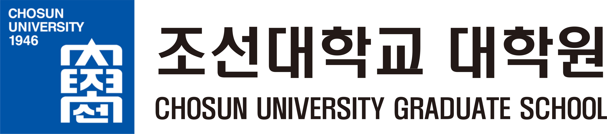

조선대학교 대학원·미래인재융합대학원이 2026년 1월부터 추진해 온 국책사업, 학과 신설, 글로벌·연구 지원 프로그램을 한 번에 정리했습니다.
조선대학교 대학원은 일반대학원과 미래인재융합대학원 체제로 운영됩니다. 교학팀은 입시·학사·학적·시험·장학등록 업무와 함께 대학원 단위의 국책사업 과제를 수행합니다.
석·박사 학위과정, 종합시험·외국어시험, 연구보조장학금
융합·계약학과 학위과정, 재직자 교육과정 운영
{{ p.d }}
4개 사업 17개 프로그램, 학과 신설, 해외 파견과 연구비 지원이 동시에 돌아가고 있습니다. 아래 수치는 2026. 9. 3. 현재 진행 기준입니다.
2026년 1월 ~ 9월 · 현재 진행 기준
{{ row.d }}
교학 업무로는 전·후기 수강신청과 복학·수료연구생 등록, 외국어시험과 종합시험 시행, 실험실습비 집행을 함께 처리했습니다.
앵커사업 글로벌 현장학습(GFC) · 대학원 글로벌 현장학습(교비)
MECA 분야 석·박사과정 학생을 싱가포르 현장학습에 파견했습니다. 1인당 최대 500만 원 이내로 지원합니다.
대학원 글로벌 현장학습 프로그램을 교비로 별도 편성해 파견 규모를 두 배로 늘렸습니다.
MECA 분야 대학원생에게 필요한 것은 국제 공동연구 경험입니다. 해외 연구기관·기업 현장을 직접 경험하게 해 논문과 학위 연구로 이어지도록 설계했습니다.
국제 공동연구 역량 강화, 해외 공동학위·국제논문 실적 확대, 그리고 MECA 분야 후속 연구인력 확보입니다.
해외파견 목표 10명에 대해 현재 18명(180%)이 확정되었으며, 프로그램은 2026년 12월까지 운영됩니다. 사진과 방문 기관 목록을 주시면 이 페이지에 함께 넣겠습니다.
한국국제협력단(KOICA)의 전문인재 양성 프로그램 운영 대학으로 선정되어, 개발협력 분야 외국인 대학원생을 정규 학위과정으로 유치할 기반을 확보했습니다.
제조산업 엔지니어링 분야로 운영합니다. 석사 24개월, 한국어 교육 약 400시간, 산업체 인턴십 6개월을 합쳐 총 30개월 과정입니다.
OECD 개발원조위원회가 지정한 수원국 중 13개국을 대상으로 하며, 베트남·우즈베키스탄·이집트·캄보디아를 우선 선발합니다.
왕복항공료, 등록금, 한국어 교육 수강료, 기숙사비, 현장학습비, 생활비, 정착·귀국지원금, 건강보험료를 KOICA가 지원합니다.
2026학년도 후기 전형에서 선발이 완료되어, 첫 KOICA 연수생 18명이 기계공학과 석사과정에 입학합니다.
7. 22. ~ 7. 30.
7. 22. ~ 8. 3.
8. 14.
8. 19. · 등록금 면제
모집·선발은 국제협력팀과 함께 진행하며, KOICA 신입생에게는 앵커사업 MECA 장학금 지원도 연계합니다.
4단계 두뇌한국21 · 대학원 연구단 지원
BK21은 대학원 교육연구단(팀)을 단위로 대학원생 연구장학금, 신진연구인력 인건비, 교육과정 개선을 지원하는 사업입니다. 조선대학교는 4단계 BK21 사업에 교육연구단 1곳과 교육연구팀 3곳이 참여하고 있으며, 대학원은 참여 연구단의 학사·장학 행정과 성과 관리를 지원합니다.
{{ b.d }}
참여 연구단 소속 석·박사과정생에게 연구장학금을 지급합니다.
박사후연구원·계약교수 채용으로 연구단 역량을 보강합니다.
해외 공동연구와 국제 학술활동을 지원하고 연차 성과를 점검합니다.
교육연구단은 공학기술연구원, 교육연구팀은 각 학과 단위로 운영됩니다.
학위과정 신설 및 대학원 학칙 개정
에너지 분야 고급 연구인력 수요에 맞춰 박사과정을 신설했습니다.
기후·환경 현안에 대응하는 융합 학위과정을 새로 개설했습니다.
반도체첨단패키징 전문인력양성사업을 기반으로 첨단패키징·반도체 공정 분야 석·박사 인력 양성을 위해 신설을 추진합니다.
3대 융합학과와 함께 신설을 추진하며 학칙 개정과 융합교과목 개발을 진행하고 있습니다. 교육과정은 2027년 3월 운영 예정입니다.
Research Master 학위과정 운영계획을 수립하고 참여학과 대학원생 지원 프로그램을 준비하고 있습니다.
5개 융합학과와 함께 심화 캡스톤디자인 교과목을 개설해 학부에서 대학원으로 이어지는 경로를 만들고 있습니다.
2022년 9월 개설 이후 장학생 45명을 선발·지원하고 석사 21명을 배출했습니다. 매년 장학생 10명은 광주광역시와 조선대학교가 수업료 전액을 지원하며, 올해 3월에는 ㈜다우환경이 학과 인재 양성을 위해 1,000만 원을 기탁했습니다.
신설 학과의 모집 시기와 정원은 학칙 개정 및 대학 심의 절차에 따라 확정됩니다.
대학혁신지원사업 미래 연구 인재 양성
{{ r.d }}
앵커사업으로 석·박사과정 신진연구자의 연구비를 지원합니다. 전일제 재학생 70명이 확정되어 2학기 등록금에 반영되었습니다.
포럼과 세미나를 상시 지원합니다. 현재까지 성과교류회·학술대회·세미나 13건을 열었습니다.
수치는 2026. 9. 3. 현재 진행 기준이며, 대부분의 프로그램이 하반기까지 계속 운영됩니다.
2026학년도 하계 대학원 대학혁신 운영과제 성과공유회 · 2026. 8. 5. 본관 3층 3181강의실
대학혁신 운영과제에 참여한 대학원생과 지도교원이 한자리에 모였습니다.
대학원장 개회 인사로 공유회를 열었습니다.
참여 대학원생이 프로그램 지원 배경과 활동 목표를 직접 발표했습니다.
대학혁신 운영과제에 참여한 학생이 연구 배경과 활동 목표, 수행 결과를 직접 발표하는 자리로, 하계와 동계 두 차례 운영합니다.
5개 단위과제 · 10개 프로그램 · 현재 진행 기준
| 단위과제 | 프로그램 | 지금 하고 있는 일 | 상태 |
|---|---|---|---|
| 공간 고도화 | 교육·연구 공간 고도화 | 교육·연구 공간 3건, 공동활용 공간 1건 신청 접수 | 준비 |
| 맞춤형 연구활동 지원 | 석·박사 장학금·플랫폼 | 전일제 재학생 70명 선정, 2학기 등록금 반영 | 진행 |
| 신진연구자(Rookie) 연구지원 | 석사·박사 대상 2차 모집 완료 | 진행 | |
| 연구활동 지원(SYNERGY-R) | 포럼·세미나 상시 지원, 13건 개최 | 진행 | |
| 교육과정 개발·운영 | 기업 수요 맞춤형 교육과정 | 모듈형 교과목 4과목 개발 준비 | 준비 |
| 지역문제 해결형 캡스톤디자인 | 5개 학과 17명 모집, 6개 팀 운영 | 진행 | |
| 프로젝트 Lab 애로기술지도 | 기업 애로기술 자문 운영 준비 | 준비 | |
| 재직자 역량 강화 | 산학연 공동기술개발(R&BD) | 참여기업 협약 완료, 과제 착수 준비 | 진행 |
| PBL 기반 업스킬링 아카데미 | 재직자 교육 상시 접수 | 준비 | |
| 글로벌 필드 챌린지 | 글로벌 현장학습 지원(GFC) | 싱가포르 18명 파견 | 진행 |
{{ v.q }}
{{ p.d }}
2026. 9. ~ 2027. 2.
{{ u.d }}